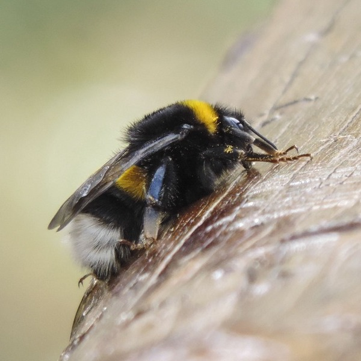
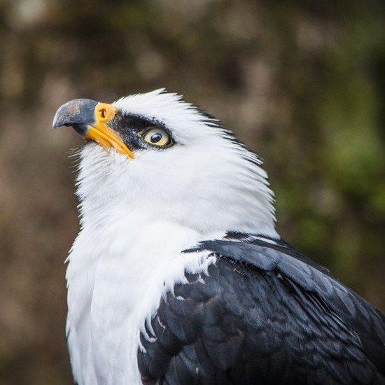
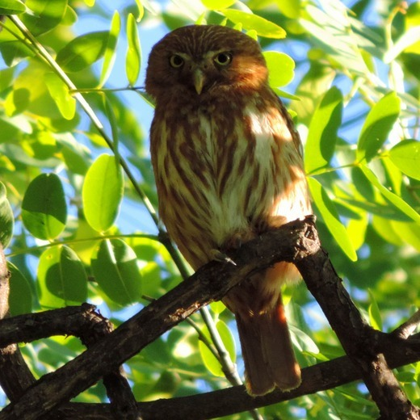
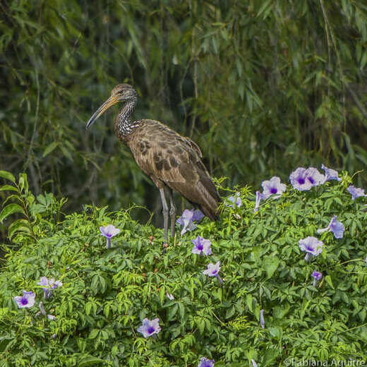
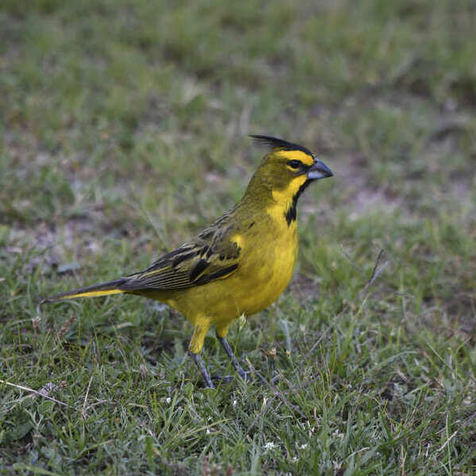
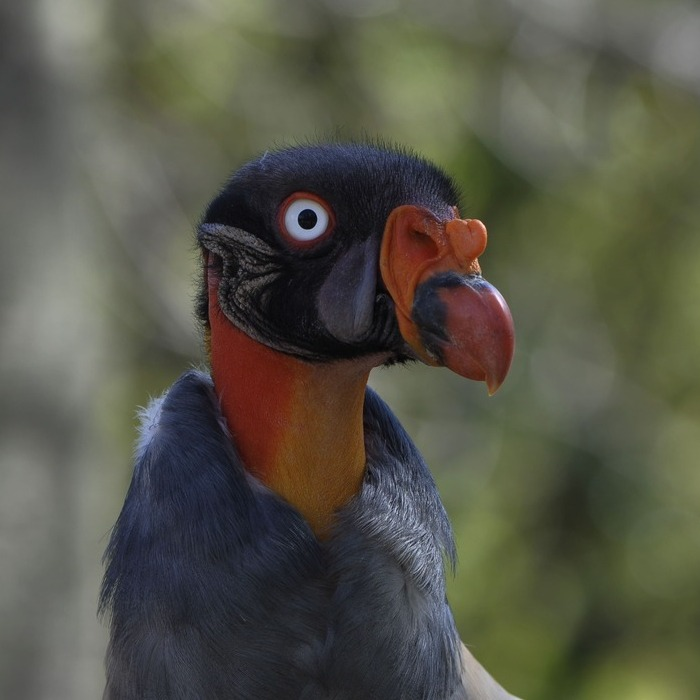

Nacida en Buenos Aires, soy fotógrafa de naturaleza. Mis pasiones son mi familia, los viajes y la naturaleza. Mi interés en la fotografía se dio a partir del nacimiento de mi primer hijo, para inmortalizar sus primeros momentos. Me gusta compartir experiencias y conocimientos, perfeccionarme, conocer y divulgar las bellezas naturales de Argentina. Actualmente soy miembro del Club de Observadores de Aves de Palermo.
Galería de Paisajes
Galería de Fauna





